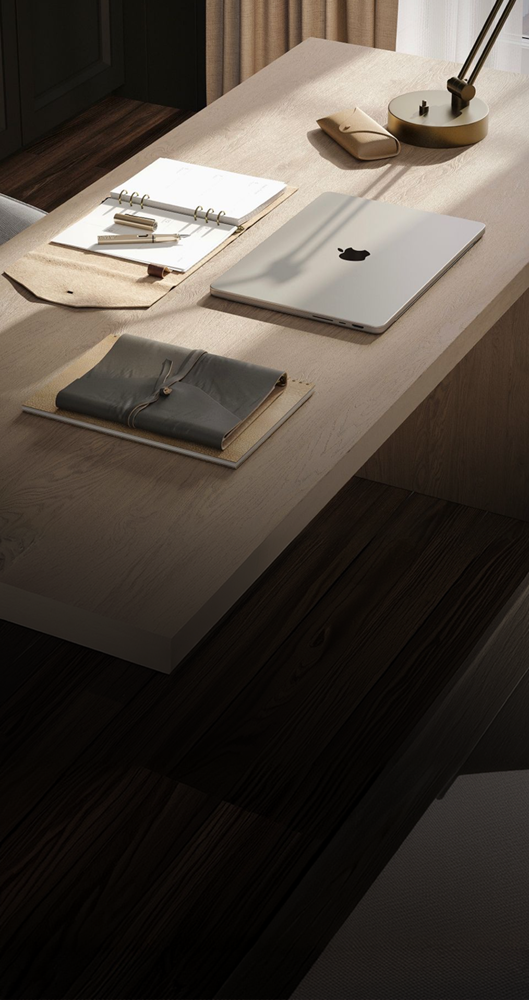
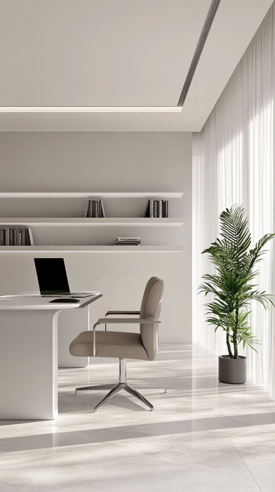
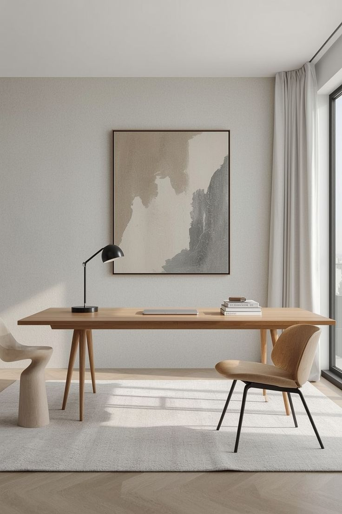

v1.0
Brand
Style Guide
Ідентичність бренду в кожному кадрі.
Зміст
Сімнадцять розділів, один стандарт.
Кожен розділ описує окремий аспект візуальної системи VIRAgency — від позиціонування бренду до правил роботи з контентом. Разом вони формують єдиний стандарт, який забезпечує цілісність усіх матеріалів.
{{ ch.num }}
{{ ch.title }}
02 · Розділ
Brand Overview
Про бренд, його характер і принципи, що формують усі комунікації.
Brand Essence
VIRAgency допомагає організаціям структурувати складні процеси, створювати зрозумілі комунікації та доносити свою цінність без зайвого шуму.
Тон бренду — спокійна впевненість без зайвої гучності.
Brand Principles
Принципи бренду
{{ pr.n }}
{{ pr.name }}
{{ pr.desc }}
Brand Personality
Архетип: Союзник
Ми поруч, щоб допомогти розібратися, пояснити складне та підтримати у процесі змін. Ми не демонструємо перевагу — ми допомагаємо рухатися вперед.
Tone of Voice
Як звучить бренд
Бренд говорить просто, впевнено та з повагою до читача. Ми пояснюємо, а не ускладнюємо; допомагаємо, а не повчаємо.
«{{ s.say }}»
НЕ ТАК: «{{ s.dont }}»
Visual Philosophy
Візуальні принципи бренду
{{ vp.name }}
{{ vp.desc }}
03 · Розділ
How the Brand Speaks
Як стратегія бренду перетворюється на контент, який легко впізнати та запам'ятати.
Наш Instagram
Як бренд говорить
в Instagram
Кожна публікація створюється за єдиною логікою. Ми починаємо з проблеми, пояснюємо її причину та завершуємо практичним рішенням. Саме така структура робить контент корисним, послідовним і впізнаваним.
Усі приклади далі побудовані за єдиною моделлю: проблема → пояснення → рішення.
Контент-стратегія
Контент як система довіри
Мета
Показувати експертизу через практичну користь, а не через самопрезентацію.
Логіка послідовності
Проблемадопомагаємо впізнати ситуацію
Спостереженняпояснюємо причину
Методпропонуємо рішення
FAQзнімаємо заперечення
Розмовазапрошуємо до діалогу
Карусель
слайд 1 · обкладинка
1 / 3
Комунікаційна мета
Перший слайд має бути одразу впізнаваним. Він не продає — він показує проблему, яку читач уже знає.
Ключове повідомлення
Коли знання й процеси зосереджені в одній людині, організація стає вразливою.
Чому це працює
Людина впізнає власну ситуацію та хоче дізнатися, що буде далі. Саме це мотивує перегорнути карусель.
Карусель
слайд 2 · чому так стається
2 / 3
Мета слайда
Пояснити, що проблема виникає не через людей, а через відсутність системи.
Головна думка
Залежність виникає тоді, коли знання, процеси та відповідальність не розподілені між командою.
Візуальний принцип
Короткі повідомлення допомагають швидко зрозуміти головну думку без перевантаження текстом.
Карусель
слайд 3 · рішення
3 / 3
Завдання
Показати перший практичний крок, який можна зробити вже сьогодні.
Рішення
Візуалізація процесів допомагає знайти приховані залежності та побачити, де виникають ризики.
Чому саме так
Практичний інструмент завершує історію та підсилює експертність бренду.
Сторіз
1 · нагадування
1 / 2
Роль у серії
Повернути увагу до теми та підтримати інтерес після каруселі.
Що зчитує читач
Питання допомагає приміряти ситуацію на себе й викликає бажання перевірити власну організацію.
UX-рішення
Одна проста дія — і користувач уже взаємодіє з брендом.
Сторіз
2 · заклик
2 / 2
Навіщо це
Повернути аудиторію до каруселі та продовжити розмову без нав'язливих закликів.
Запрошення
Заклик звучить як природне продовження теми, а не як рекламне повідомлення.
Чому це працює
Після корисного контенту людина значно охочіше взаємодіє з брендом. Stories м'яко завершують комунікацію та підтримують інтерес.
System in Action
Одна система — десятки тем і форматів.
Нижче показано, як однакова логіка комунікації працює в різних публікаціях, зберігаючи цілісність бренду.
Знання живуть
у людях, а не
в системі
→
Ризики
Приховані ризики організації
Те, що не описано, з часом стає вразливістю.
Коли процеси описані
Що дає система
—знання задокументовані
—ролі зрозумілі
—онбординг швидший
Дізнатися більше →

Хто насправді ухвалює рішення?
→
Ручні процеси гальмують ріст
Що більше ручної роботи — то повільніші рішення.
Читати більше →
«Проблеми починаються не з грошей, а з нечітких ролей.»
— з практики Viragency
04 · Розділ
Feed System
Стрічка працює як система. Кожна публікація має власну роль, а їхня послідовність поступово формує довіру, впізнаваність і цілісне сприйняття бренду.
Feed Roles
04.1
Кожна публікація виконує свою роль
Роль
Що робить
Коли використовувати
Візуальний патерн
Навчальний
Пояснює концепцію чи термін
Коли аудиторії бракує базового розуміння
HERO / LIST
Проблемний
Називає больову точку аудиторії
На старті серії постів або щоб зачепити увагу
HERO / STATEMENT
Процесний
Показує, як усе влаштовано зсередини
Коли треба продемонструвати експертизу
PROCESS / TIMELINE
Довірчий
Підтверджує результат чи компетентність
Після кількох навчальних постів — щоб не скотитись у теорію
STAT / QUOTE
Діалоговий
Запрошує аудиторію відповісти чи поділитися
Щоб підтримати живий діалог з аудиторією
QUESTION / FAQ
CTA
Веде на конкретну дію
Наприкінці серії постів або перед запуском
CTA / BUTTON
Feed Rhythm
04.2
Один можливий ритм
Це лише один із можливих сценаріїв. Послідовність ролей може змінюватися залежно від цілей, але баланс між ними залишається незмінним.
01Проблемний
02Навчальний
03Проблемний
04Довірчий
05Процесний
06CTA
07Довірчий
08Навчальний
09Діалоговий
01Проблемнийзачіпає увагу з першого погляду
02Навчальнийдає користь, розвиває тему
03Проблемнийновий інсайт підтримує напругу
04Довірчийзнімає сумнів фактом чи цитатою
05Процеснийпоказує роботу зсередини
06CTAконвертує зібрану увагу
07Довірчийзакріплює довіру після дії
08Навчальнийповертає до корисної теми
09Діалоговийзавершує цикл, запрошує відповідь
Приклад одного можливого ритму. Головне — не порядок публікацій, а баланс між їхніми комунікаційними ролями.
Feed Planning Logic
04.3
Принципи, а не формула
Ця система не диктує жорстку послідовність публікацій. Вона допомагає підтримувати баланс між різними ролями контенту.
01
Публікувати навчальний контент послідовно.
02
Чергувати практичну користь з емоційною комунікацією.
03
Демонструвати експертизу процесним контентом.
04
Закріплювати довіру реальними доказами.
05
Завершувати цикл комунікації CTA, коли це доречно.
06
Залишати місце для діалогу — система має дихати.
One System, Many Publications
04.4
Не існує «навчального формату».
Формат — лише спосіб подачі. Роль залишається незмінною.
Формат (будь-який):
Post · Carousel · Reels · Stories
ОДНА РОЛЬ. РІЗНІ ТЕМИ.
Контент починається не з формату, а з комунікаційної задачі.
Content Workflow
04.5
Алгоритм створення контенту
Практичний чекліст перед кожною публікацією.
01
Визначити мету комунікації
02
Обрати комунікаційну роль
03
Підібрати формат виконання
04
Перевірити місце поста в послідовності стрічки
05
Опублікувати лише тоді, коли вона додає цінність усій стрічці.
Перед кожною публікацією достатньо пройти ці п'ять кроків, щоб переконатися, що контент працює на систему, а не існує окремо.
05 · Розділ
Carousel System
Роль публікації вже визначена. Тепер — як побудувати карусель, яка послідовно проводить читача від першого свайпу до дії.
One Story
05.1
Кожна карусель розповідає одну історію
Карусель — це одна історія, розділена на кілька послідовних кроків. Кожен слайд існує лише тому, що наближає читача до наступного.
→
→
→
04
92% зростання за квартал
Evidence
→
One Slide, One Message
05.2
Один слайд = одна думка.
Коли слайд намагається сказати все одразу — читач не запам'ятовує нічого.
✕ОДИН СЛАЙД ПЕРЕВАНТАЖЕНИЙ
Що таке SEO і чому це важливо?
«Найкращий контент — той, що шукають»
✓ Пункт один✓ Пункт два✓ Пункт три
Готові? →
→
Slide Types
05.3
Функціональні типи слайдів
Будівельні блоки каруселі. Кожен вирішує конкретну задачу — виберіть відповідно до мети. Не кожна карусель використовує всі типи слайдів. Важливо лише, щоб кожен із них виконував свою задачу.
Фото / візуал
Заголовок каруселі
Короткий опис
Гортайте →
Cover
Захопити увагу і спонукати до першого свайпу.
Ключова думка
«Формат не має значення. Важливо,
що ви хочете сказати».
Statement
Зафіксувати головний висновок
Чому ця система не працює?Розберімо причину →
Question
Створити інформаційний розрив і мотивувати перегорнути далі.
72%клієнтів краще запам'ятовують структурований контентГрафік
Statistics
Підкріпити тезу фактами.
Що перевірити:
✓Одна мета
✓Одна думка
✓Один наступний крок
List
Впорядкувати кілька ідей, полегшити сприйняття.
”«Це змінило наш підхід до комунікації».— Ім'я, посада
Quote
Додати авторитетність — чужа думка звучить переконливіше.
2022 — Початок
2023 — Тестування
2024 — Масштабування
Timeline
Пояснити хронологію, показати прогрес у часі.
01Аналіз
↓
02Структура
↓
03Реалізація
Process
Пояснити послідовність дій.
Варіант AБагато текстуСлабкий фокус
Варіант BОдна думкаЧіткий фокус
Comparison
Порівняти два варіанти, підкреслити різницю.
Скріншот кейсу
Як ми спростили процес+42% до конверсіїКлючовий висновок
Спробувати підхід →Одна дія. Без зайвого вибору.
CTA
Спонукати до однієї дії — ніщо інше не має конкурувати з нею.
Carousel Anatomy
05.4
Універсальна структура каруселі
Тепер зберіть типи слайдів у карусель. Кожен виконує свою наративну роль.
Кожна карусель може виглядати по-різному. Але сильні каруселі майже завжди мають логічний шлях від уваги до дії.
Reading Flow
05.5
Як погляд рухається слайдом
↓
Заголовок слайда
↓
Короткий пояснювальний текст, який розкриває думку.
↓
Ключовий висновок
↓
Гортайте →
02 ЗаголовокФормулює головне повідомлення.
03 ТекстДає необхідний контекст.
04 АкцентФіксує ключовий висновок.
05 НавігаціяПідказує наступну дію.
Дизайн слідує порядку читання, а не декору.
Information Density
05.6
Не кожен слайд важить однаково
Коли інформації забагато, не стискайте її. Розділіть на кілька слайдів.
✓
image
Просто роби так.
Одна думка. Нічого зайвого.
→
Низька — добре
Ідеально для ключових повідомлень.
?
Середня — прийнятно
Заголовок, кілька рядків, візуал і акцент. Оптимальний баланс.
✕
Висока — уникайте
Забагато інформації → розділіть на 3–4 слайди.
Before You Design
05.7
Перед публікацією — перевірте
Одна головна ідея
Один наступний крок
Логічна історія
Чітка ієрархія
Нічого зайвого
Кожен свайп мотивує наступний
Тепер ви готові спроєктувати власну карусель.
06 · Розділ
Stories
Карусель живе на власній сторінці — глядач гортає в своєму темпі. Stories не дають цієї розкоші: рішення дивитись далі чи вийти ухвалюється за секунди. Тому тут не проєктують екрани. Тут проєктують імпульс.
Sequences, Not Screens
06.1
Історія — це потік, а не окремі екрани
Кожен кадр існує в контексті попереднього і наступного. Нижче — одна історія, розказана впродовж п'яти кадрів: від проблеми до дії.
72%
не доходять до останньої Stories
›
Чому більшість Stories пропускають?
›
Бо головна думка губиться серед деталей.
›
✓
Одна думка. Один кадр.
›
Читати повний розділ →
Це одна розмова, розділена на п'ять моментів.
One Story, One Goal
06.2
Одна історія. Одна мета.
Коли один кадр передає кілька повідомлень одночасно — жодне з них не запам'ятовується.
✕КАДР НАМАГАЄТЬСЯ СКАЗАТИ ВСЕ
Як вести бухгалтерію в неприбутковій організації
Неприбуткові організації мають дотримуватися окремих правил обліку, звітності та використання коштів.
63%організацій припускаються помилок у звітності5 типових помилок
Опитування
Читати гайд →
Забагато повідомлень конкурують за увагу в одному кадрі.
→
✓Той самий зміст — чотири кадри
Як вести бухгалтерію в неприбутковій організаціїПрактичний гайд
ЗАЦІКАВИТИ
→
Пояснити
63%
організацій припускаються помилок у звітності
→
Залучити
Яке питання викликає найбільше складнощів?
Первинні документиФінансова звітність
→
Спонукати
Як уникнути цих помилок?
Читати гайд →
Кожен кадр виконує одну задачу. Разом вони розповідають одну історію.
How People Scan Stories
06.3
Спочатку рух погляду, потім межі інтерфейсу
Instagram уже зайняв частину екрана своїм інтерфейсом. Контент повинен жити всередині безпечної області, інакше його перекриють системні елементи.
≈70%
Photo / Video
Принцип ієрархії Stories
Коротке пояснення методу.
Question Sticker
Тут живе інтерфейс Instagram — аватар, прогрес-бар, кнопка закриття. Не розміщуйте тут важливий контент.
Саме в цій зоні повинні знаходитися заголовок, текст і CTA.
Тут — поле відповіді та стікери Instagram. CTA має залишатися вище цієї межі.
Безпечна зона — це каркас композиції Stories. Усе важливе має жити всередині неї.
Story Checklist
06.4
Перед публікацією — перевірте
Одна ідея на кадр
Чітка ієрархія
Великий, читабельний текст
Достатньо простору
Інтерактивний елемент має мету
CTA очевидний
Головна думка зчитується за кілька секунд
Ключовий контент розміщений у безпечній зоні
Верхня зона Instagram UI залишається вільною
CTA не конфліктує з нижнім інтерфейсом
Тепер ви готові проєктувати Stories як систему, а не як окремі екрани.
07 · Розділ
Highlights
Highlights — це навігаційна система, а не архів історій.
Not Archive — Navigation
07.1
Highlights — це навігація профілю
Багато хто думає, що Highlights — це просто збережені історії. Насправді це постійна навігація профілю — одне з перших місць, куди потрапляє погляд відвідувача.
128 дописів
4,2k підписників
180 підписок
Одне з перших місць, куди дивиться відвідувач.
Highlights
Highlights допомагають зрозуміти бренд ще до того, як відвідувач гортає стрічку.
Archive vs. Structure
07.2
Не зберігайте все. Організовуйте.
Highlight — це не папка для зберігання. Це продумана категорія.
✕Неправильно
Архів
Закулісся
Команда
Послуги
Події
Відгуки
Різне
Усі теми належать одному Highlight — межі немає.
✓Правильно
Структура
Кожен Highlight — своя категорія зі своїм набором історій.
Highlights — це структурована навігація, а не сховище.
One Highlight, One Journey
07.3
Один Highlight — одна подорож
Історії всередині Highlight — це не випадковий набір. Це коротка послідовність кроків, що веде відвідувача до однієї мети.
Highlight: Services
Story 1
Що ми робимо
→
Story 2
Для кого це
→
Story 3
Як відбувається процес
→
Story 4
Контакт / CTA
Highlight — не випадкова добірка Stories, а коротка спрямована послідовність на одну тему.
Consistency
07.4
Єдина візуальна система
Коли структура визначена, кожен Highlight має слідувати одній візуальній мові — інакше профіль виглядає розкладеним нашвидкуруч.
✕Неправильно
Різні форми, товщина ліній, розміри та символи всередині.
✓Правильно
Різні символи, але однакова товщина лінії, розмір і композиція.
Різні категорії. Одна візуальна мова.
08 · Розділ
Components in Real Use
Система стає цінною лише тоді, коли кожен формат працює разом усередині одного профілю.
One System — Different Content
08.1
Одна система. Різний контент.
Одна тема — три формати. Feed Cover, Carousel Slide і Story зібрані з тієї самої типографіки, кольору й компонентів, але щоразу іншою композицією.
Тема 01
Фінансова звітність для НУО
Один незрозуміли звіт —
і фінансування під питаннямЗробіть звіт зрозумілим для донора, а не лише для бухгалтера.
Дізнатись →
Feed Cover · 4:5 · Photo + Headline + CTA
68%
донорів перевіряють фінансову звітність перед повторним фінансуванням.→
Carousel Slide · 4:5 · Statistic + Text

«Донор приймає рішення швидше, коли бачить зрозумілу історію,а не десятки сторінок
таблиць.»Ваш звіт легко читати?
ТакНі
Story · 9:16 · Quote + Poll
Тема 02
Прозорий звіт — більше довіри

Довіра починається зі зрозумілого звіту
Довіра починається зі зрозумілого звіту
Перевірити →
Перевірити →
Feed Cover · 4:5 · Portrait + Short Headline
Що робить фінансовий звіт зрозумілим
— цифри з контекстом
— візуальна ієрархія
— зрозуміла мова замість канцелярської
→
Carousel Slide · 4:5 · Educational + Bullets
Чи легко донору зрозуміти ваш звіт?Написати нам →
Story · 9:16 · Question + CTA
Тема 03
Підготовка до грантової заявки
Грант починається
не із заявки
Він починається з правильної підготовки документів.
Перевірити →
Feed Cover · 4:5 · Photo + Headline + Text + CTA
Перед подачею
грантової заявки перевірте ці чотири речі
Найчастіше грантові заявки відхиляють не через саму ідею, а через недостатню підготовку документів. Перед подачею переконайтеся,
що у вас є:
• чітко сформований бюджет проєкту;
• вимірювані результати та показники впливу;
• лист підтримки від партнерської організації (за потреби);
• зрозумілий план комунікації результатів проєкту.
→
Carousel Slide · 4:5 · Checklist
Нагадування
Дедлайн подачі — через 3 дні
Перевірити документи →
Story · 9:16 · Reminder
Різні теми. Одна впізнавана система.
One Connected Profile
08.2
Профіль як єдина система
Пости, Stories й Highlights — не окремі об'єкти. Вони працюють разом усередині одного профілю, кожен зі своїм типом контенту.
VIRAgency
128дописи
4 320підписники
180підписки
Консалтинг для NGO
бізнес-процеси | фінанси | право | комунікації
ваша точка опори і впевненості
viragency.com/reports
Підписатися
Повідомлення
▾

Коли все тримається на одній людині — це вже не сила, а ризик
Дізнатись →
 68%
донорів перевіряють звіт перед повторним фінансуваннямДізнатись →
68%
донорів перевіряють звіт перед повторним фінансуваннямДізнатись →
«Прозорість починається не зі звіту, а з мови, якою він написаний»
— директорка фонду «Опора»
Довіра починається
зі зрозумілого звіту
→
Перед подачею заявки
✓Чіткий бюджет
✓Вимірювані показники
✓Лист підтримки партнера
Гортайте →
 Що таке цільове фінансування
Кошти на конкретний проєкт, а не на загальні витрати організації.
Гортайте →
Що таке цільове фінансування
Кошти на конкретний проєкт, а не на загальні витрати організації.
Гортайте →

Грант починається
не із заявки
Перевірити →
Готові зробити звіт зрозумілим?
Написати нам →
Дізнайтесь більше про нашу роботу
Дізнатись →
Шість типів контенту. Одна впізнавана стрічка.
09 · Розділ
Layout Patterns
Композиційні патерни визначають, як зображення, заголовок, текст, цифри та CTA працюють разом усередині одного кадру.
Safe Area & Grid
09.1
Безпечна зона і конструкційна сітка
Кожен формат будується на фіксованій сітці з однаковими відступами 64px з усіх боків. Це головне конструкційне правило для будь-якого кадру у стрічці.
Логотип завжди в межах безпечної зони, зверху зліва.
Content Block Anatomy
09.2
Анатомія текстового блоку
Заголовок, основний текст і CTA належать одному контейнеру. Контейнер — невидима межа, яка рухається як єдине ціле: елементи всередині ніколи не переміщуються окремо.
80%
LOGO
Content Container
Headline
≤ 4/5 рядків
↕ 24px
Body text
≤ 5 рядки
↕ 32px
CTA →
Headline 80% · Body 75% · один контейнер
Headline
Body text
CTA →
CTA — правила
Завжди останній елемент контейнера · завжди зліва · завжди 24px під текстом · ніколи не існує окремо в іншому куті кадру.
Один контейнер, одна логіка. Елементи рухаються разом, а не окремо.
Full Text Layout
09.3
Контейнер росте, відступи — ні
Коли контенту більше, контейнер розширюється вертикально. Ієрархія та внутрішні відступи між елементами залишаються незмінними.
HEADLINE
BODY PARAGRAPH
BODY PARAGRAPH
BODY PARAGRAPH
CTA →
Розширений контент
Ієрархія незмінна
Logo
↓
Headline
↓
Body paragraph
↓
Body paragraph
↓
Body paragraph
↓
CTA
Контейнер розширюється вертикально — відступи між елементами не змінюються.
Allowed Text Positions
09.4
Змінюється лише вертикальна позиція
Три дозволені позиції контейнера. Ширина, вирівнювання, внутрішні відступи, позиція логотипа та позиція CTA відносно тексту — однакові в усіх трьох.
BODY PARAGRAPH
HEADLINE
CTA →
Bottom Left
HEADLINE
BODY PARAGRAPH
CTA →
Middle Left
HEADLINE
BODY PARAGRAPH
CTA →
Upper Left
Однакова ширина контейнера
Однакове вирівнювання зліва
Однакові внутрішні відступи
Незмінна позиція логотипа
Незмінна позиція CTA відносно тексту
Позиція змінюється по вертикалі. Все інше — фіксоване.
Image & Typography Rules
09.5
Overlay, простір і заголовки
Затемнення, вільний простір під текстом і довжина заголовка — три правила, які разом забезпечують читабельність кадру.
Overlay залежно від яскравості
Negative Space
Важливі об'єкти кадру не повинні опинятися прямо під заголовком чи текстом.
✓ Рекомендовано
Один пропущений
документ може
зупинити весь процес
✕ Уникати
Один пропущений документ може зупинити весь процес
Ширина заголовка ≈ 70–80% композиції. Ніколи не розтягуйте заголовок на всю ширину.
Простір під текстом і збалансований заголовок — умова читабельності кадру.
Summary
09.6
Зведення правил системи
Безпечна зона
80px з усіх боків
Логотип
Зверху зліва, 80px від верху і зліва
Заголовок
Ширина ≈ 80%, до 5 рядків
Основний текст
Ширина ≈ 75%, 24px під заголовком
CTA
32px під текстом, завжди в тому самому контейнері
Нижній відступ
Мінімум 80px
Overlay
40–60%, залежно від яскравості зображення
Content Block
Росте вертикально, зберігаючи внутрішні відступи
Дозволені позиції
Bottom Left / Middle Left / Upper Left
Negative Space
Завжди зберігати вільний простір за типографікою
Одна сітка. Одні правила. Будь-який контент.
10 · Розділ
Photography Usage
Візуальна мова фотографії VIRAgency: що належить системі, а що — ні.
Photography Philosophy
10.1
Фотографія — частина системи, а не декорація
Кожне зображення підтримує повідомлення, залишає простір для типографіки і залишається візуально спокійним. Усі фото належать одній впізнаваній фотографічній мові.
Однакова температура кольору
Однакове світло
Однакова композиція
Однаковий обсяг простору
Хороша фотографія підтримує повідомлення, а не конкурує з ним.
What Makes A Photo
10.2
Що робить фото фотографією VIRAgency
Референс того, що ніколи не потрапляє в стрічку — незалежно від якості зйомки чи ретуші.
✕ Не використовувати
Постановочне рукостискання
Загальний корпоративний сток
Ми продаємо експертність, а не емоційний шум.
Composition For Photography
10.3
Фото повинно залишати простір для тексту
Головний об'єкт, вільний простір і безпечна зона під типографіку — три речі, які перевіряються ще на етапі вибору кадру.
 БЕЗПЕЧНА ЗОНА ПІД ТИПОГРАФІКУ
БЕЗПЕЧНА ЗОНА ПІД ТИПОГРАФІКУ
✓ Велика чиста зона для тексту
Текст поверх головного об'єкта
Немає вільного простору під текст
Фотографія повинна залишати достатньо простору для читабельного тексту.
Color, Light & Mood
10.4
Світло, колір і настрій
Світло
✓ М'яке денне світло, розсіяне освітлення
✕ Жорсткий спалах, різкі тіні, пересвіт
Колір
✓ Теплі нейтральні, беж, графіт, приглушений контраст
✕ Неонові кольори, перенасиченість, строкатий офіс
Настрій
✓ Спокійний, зосереджений, впевнений, професійний
✕ Награний захват, театральні пози, очевидний фотосток
Якщо фотографія виглядає як фотосток — вона не належить системі VIRAgency.
11 · Розділ
Icon Usage
Іконки в дописах, каруселях і Stories — тихий допоміжний шар. Система тримається на типографіці й фотографії.
Icons Are Secondary
11.1
Іконки — другорядний візуальний елемент
Іконка підтримує інформацію — вказує напрямок дії, позначає пункт списку, супроводжує цифру. Вона ніколи не стає головним візуалом посту.
Learn more→
CTA зі стрілкою
Пункт чек-листа
check-іконка
Про нас
біля заголовка розділу
Завантажити звіт
іконка документа
12 серпня
іконка календаря
Ікони підтримують комунікацію. Вони ніколи не стають нею.
Minimal Icon Style
11.2
Тиха, мінімальна мова іконок
Прості, монохромні, легкі лінійні знаки — жодного об'єму, кольору чи декору.
✕ УНИКАТИ
Кожна іконка повинна виглядати так, ніби вона походить з однієї й тієї ж системи дизайну.
CTA Icons
11.3
Стрілка — частина CTA-компонента
Стрілка завжди йде після тексту, ніколи перед ним, і завжди вирівняна по вертикалі з рядком.
Read more→
Download→
Learn more→
Open→
Contact us→
8–12px відступ, стрілка на базовій лінії тексту
✓ стрілка після тексту
✓ вирівняна по вертикалі
✕ ніколи перед CTA
Emoji Usage
11.4
Емодзі — точково, для орієнтації
Не повна заборона, а чітке правило: емодзі допустимі, коли покращують орієнтацію в тексті.
✓ ДОПУСТИМО
📌Ключова теза
📄Завантажити PDF
📅12 серпня
📍Київ
✓Виконано
Одне емодзі на рядок — коли воно допомагає скануванню тексту.
✕ УНИКАТИ
Скупчення емодзі, повтори, емодзі замість слів, емодзі суто для декору.
Емодзі можна використовувати економно, коли вони покращують чіткість, ніколи не для створення візуального шуму.
12 · Розділ
Logo Usage
Не про дизайн логотипа — про те, як він з'являється у дописах і Stories.
Logo Is An Identifier
12.1
Логотип — ідентифікатор, а не декор
Логотип підтверджує авторство. Він не прикрашає пост і не бореться за увагу з фотографією чи заголовком.
Сильний дизайн впізнається ще до того, як помічено логотип.
Коли все тримається на одній людині — це ризик
Дізнатись →
«Прозорість починається не зі звіту, а з мови, якою він написаний»
— директорка фонду «Опора»
68%
донорів перевіряють звіт перед повторним фінансуванням
Хороший дизайн працює навіть без великого логотипа.
Logo Placement
12.2
Де розміщувати логотип
✓ ПРАВИЛЬНО
Коли все тримається
на одній людині
Дізнатись →
- ✓ маленький логотип
- ✓ однакові відступи щоразу
- ✓ завжди у верхньому лівому куті
- ✓ ніколи не змагається з фото чи текстом
✕ НЕПРАВИЛЬНО
✕
Поверх обличчя
Size & Safe Area
12.3
Мінімальний розмір і захисна зона
 мінімальний розмір: 216 × 40px
мінімальний розмір: 216 × 40px
13 · Розділ
Color Usage
Одна офіційна палітра, застосована послідовно — а не колірна теорія.
Brand Color System
13.1
Офіційна палітра бренду
Ролі кольорів (Primary / Secondary / Accent). Нижче показано практичне застосування на основі поточного використання.
Dark Burgundy
#620013
Primary
Головний колір бренду для заголовків, CTA-кнопок і основних візуальних акцентів.
Warm Ivory
#FFF4DD
Secondary
Додатковий світлий фоновий колір.
Soft Mint
#B4CFCC
Supporting Color
Використовується для альтернативних фонів, виділення секцій і тонких акцентів.
Black
#000000
Neutral
Використовується для основного тексту, іконок та інших елементів із високим контрастом.
Color Distribution
13.2
Баланс кольорів у композиції
Burgundy — фон, більшість композиції
Ivory — акценти й заголовки
Mint — альтернативний фон
Основний колір формує характер бренду, а допоміжні кольори підтримують композицію та створюють баланс.
Color Consistency
13.3
Послідовність кольору
✓ DO
- Використовувати лише офіційні кольори бренду
- Зберігати ті самі відтінки скрізь
- Тримати сильний контраст
- Використовувати одну цілісну палітру
✕ DON'T
- Додавати випадкові кольори
- Створювати нові відтінки
- Зловживати акцентним кольором
- Використовувати декоративні градієнти без мети
Одна палітра, застосована послідовно, сильніша за десять «цікавих» кольорів.
14 · Розділ
Typography Usage
Два шрифти, чітка ієрархія, жодних випадкових комбінацій.
Typography System
14.1
Два офіційні шрифти
TYPEFACE 1 · PRIMARY
Onest
Використовується для всіх заголовків, основного тексту, CTA, UI-елементів і більшості брендової комунікації.
Прозорість починається з мови
TYPEFACE 2 · EDITORIAL
Spectral
Використовується лише для цитат, смислових акцентів, окремих редакційних макетів і довгих текстових форматів.
«Прозорість починається з мови»
Type Scale
14.2
Шкала типографіки
Style
Weight
Size
Line Height
Live Preview
Display XL
Semibold
80
90
Дизайн, який говорить
Display L
Semibold
70
80
Сила простих рішень
H1
Semibold
60
68
Історія одного бренду
H2
Medium
52
60
Три принципи довіри
H3
Medium
44
52
Що ми зробили цього кварталу
Body XL
Regular
40
54
Прозорість — це не слово, а щоденна практика.
Body L
Regular
30
42
Прозорість — це не слово, а щоденна практика.
Body M
Regular
24
36
Кожен піст будується за одними й тими самими правилами.
Body S
Regular
18
30
Взаємодія з донорами базується на довірі та відкритості.
Caption
Regular
16
28
Фото: Іван Петренко, 2024
Overline
Medium
14
24
Річний звіт
Choosing Heading Size
14.3
Розмір заголовка залежить від обсягу тексту
Display XL / Display L
Короткий заголовок, 1–2 рядки.
Як ми будуємо довіру
з донорами крок
за кроком
H1
Середній заголовок, 2–4 рядки.

Чому прозора звітність важлива
для кожної команди, яка працює
з донорською підтримкою
та публічними коштами
H2 / H3
Довгий заголовок, 4–6 рядків.
Чим більше тексту — тим менший розмір заголовка.
Typography Rules
14.4
Принципи типографіки
✓Використовувати лише Onest і Spectral
✓Зберігати чітку візуальну ієрархію
✓Не більше двох накреслень в одній композиції
✓Ніколи не розтягувати й не стискати шрифт
✓Дотримуватись однакових інтервалів і вирівнювання
✓Заголовок завжди залишається найсильнішим елементом
15 · Розділ
DO / DON'T
Практичний розбір справжніх постів VIRAgency, крок за кроком.
Composition Review
15.1
Хороша композиція читається за секунди
Розбір реального поста VIRAgency — так, як його б переглянув арт-директор перед публікацією.
✓ DO

Родини отримали підтримку цього
кварталуЗвіт про грантову програму
Дізнатися більше →
✓ Одне чітке повідомлення
✓ Сильна візуальна ієрархія
✓ Достатньо повітря
✓ Один візуальний фокус
✓ Чіткий CTA
✕ DON'T
НОВИЙ ЗВІТ
66
500+
3
родин отримали підтримку цього кварталузвіт про грантову програму
2
Цього кварталу ми охопили більше родин, ніж будь-коли: нові партнерства, нові донори, нові регіони та ще одна довга фраза про результати, яку варто було б скоротити вдвічі.
1
ДІЗНАТИСЯ БІЛЬШЕ ПРЯМО ЗАРАЗ →
5
4
✕ 1) Занадто багато тексту
✕ 2) Некоректний СТА
✕ 3) Кілька конкуруючих фокусів
✕ 4) Непослідовні відступи
✕ 5) Завеликий CTA
✕ 6) Декор без функції
Композиція повинна допомагати читати інформацію, а не ускладнювати її.
Before / After Typography
15.2
Один пост, розрізаний навпіл
Той самий заголовок і той самий підпис — ліворуч типографіка працює, праворуч кричить.
✓ DO
Грантовий звіт
Прозорість — наш пріоритет
Одна ідея, чітка ієрархія, достатньо повітря між рядками.
✓ Правильна шрифтова ієрархія
✓ Офіційна палітра кольорів
✓ Затверджені шрифти Onest / Spectral
✓ Комфортні відступи
✓ Високий контраст
✕ DON'T
грантовий звіт 2026
ПРОЗОРІСТЬ!!
наш пріоритет це найголовніше
одна ідея, чітка ієрархія
достатньо повітря
1
2
3
4
5
✕ 1) Випадкові розміри шрифтів
✕ 2) Забагато стилів шрифтів
✕ 3) Неправильне використання Spectral
✕ 4) Низький контраст
✕ 5) Випадкові кольори
Якщо читач спочатку бачить дизайн, а не зміст — типографіка програла.
Consistency Across the Feed
15.3
Один бренд. Одна система.
Три різні пости, три різні фото, три різні теми — і все одно одна стрічка.
Нова школа
відкрила двері
Читати →
Перед подачею грантової заявки перевірте ці чотири
речі
Дивитись далі →
 Партнери підписали
Партнери підписали
угоду
лого по центру, кислотні кольори
лого знизу, монотипографіка, зелений оверлей
суцільна жовта рамка, крик замість заголовка
Послідовність важливіша за індивідуальну креативність кожного посту.
15.4 · Final Review
Перед публікацією
□Чи макет відповідає дизайн-системі?
□Чи використані лише офіційні кольори бренду?
□Чи типографіка послідовна?
□Чи достатньо повітря в композиції?
□Чи є лише один візуальний фокус?
□Чи правильно розміщений логотип?
□Чи фотографія відповідає стилю VIRAgency?
□Чи ієрархія зрозуміла з першого погляду?
□Чи CTA легко помітити?
□Чи одразу впізнається цей пост як VIRAgency?
Кожен пост VIRAgency має виглядати так, ніби його створили одна команда, один дизайнер і одна система.
16 · Розділ
Complete Instagram Examples
Спосіб мислення та як перетворити один принцип бренду на завершений Instagram-контент.
Design Process
16.1
Перш ніж почати дизайн
Хороший дизайн — це не набір красивих рішень. Це послідовність правильних рішень.
01
Одне повідомлення
Якщо пост несе два повідомлення — не спрацює жодне.
02
Що має зрозуміти людина
Не що ми хочемо сказати, а що людина винесе за перші три секунди.
03
Наступна дія
Що користувач має зробити після перегляду?
04
Найкращий формат
Формат обирають під задачу, а не навпаки.
05
Візуальна підтримка
Зображення повинно підсилювати думку, а не просто заповнювати простір.
Якщо на ці п'ять запитань немає чіткої відповіді — ще зарано відкривати редактор.
Format Logic
16.2
Формат — це інструмент
Не існує універсального формату. Кожен формат вирішує лише одну конкретну задачу.
Мета
Найкращий формат
Оголосити новинуFeed
Пояснити темуCarousel
НагадатиStories
Зберегти інформаціюHighlight
Спонукати до діїCTA
Спершу мета — потім формат. Ніколи навпаки.
User Journey
16.3
Один шлях користувача
Ми проєктуємо не пост, а те, як змінюється розуміння людини — крок за кроком.
ПомітивFeed
↓
ЗацікавивсяCarousel
↓
ЗрозумівStories
↓
ЗберігHighlight
↓
ДіяCTA
Дизайн одного посту — це дизайн одного моменту в досвіді людини.
Content Roles
16.4
За що відповідає кожен формат
Один формат — одна відповідальність.
Feed→Привертає увагу
Carousel→Пояснює
Stories→Нагадує
Highlight→Зберігає
CTA→Конвертує
Формати не конкурують між собою. Вони працюють як одна система.
16.5 · Final Review
Востаннє, перевіряємо
✓Одне чітке повідомлення
✓Один візуальний фокус
✓Чітка ієрархія
✓Достатньо простору
✓Правильна типографіка
✓Послідовна кольорова палітра
✓CTA підтримує повідомлення
✓Зрозуміло за 2–3 секунди
Усі принципи вже на місці. Залишився останній крок — фінальна перевірка перед публікацією.
17 · Розділ
Final Checklist
Це практичний інструмент, перевірка, яку проходить кожна публікація VIRAgency перед виходом у Instagram — незалежно від формату.
Final Checklist
17.1
Остання перевірка перед публікацією
Кожна публікація VIRAgency — Feed, Carousel, Stories чи Highlight — проходить один і той самий чекліст перед виходом у мережу. Формат не звільняє від жодного пункту.
Зміст
→
Формат
→
Візуал
→
Фото
→
Публікація
П'ять кроків. Один результат — публікація, гідна системи VIRAgency.
Content Review
17.2
Починаємо зі змісту
Хороший дизайн не врятує незрозуміле повідомлення. Спершу перевіряємо зміст — лише потім форму.
□Одне чітке повідомлення
□Правильна цільова аудиторія
□Зрозуміла комунікаційна мета
□Головна ідея зрозуміла за 2–3 секунди
□Немає зайвої інформації
□Зрозуміла наступна дія
Якщо зміст незрозумілий — жоден дизайн це не виправить.
Format Review
17.3
Формат відповідає задачі
Кожен формат має підтвердити свою роль у системі — не просто виглядати доречно.
□Feed привертає увагу
□Carousel пояснює
□Stories нагадують
□Highlight зберігає
□CTA веде до дії
□Формати не дублюють
□Формат продовжує шлях користувача
Спершу визначаємо мету. Потім обираємо формат.
Visual Review
17.4
Перевірка візуалу
Найдетальніший крок. Чотири групи, які разом формують візуальну дисципліну VIRAgency.
01Композиція
□Один візуальний фокус
□Чітка ієрархія
□Достатньо простору
□Правильні відступи
□Дотримані safe zones
□Немає елементів, що конкурують
02Типографіка
□Лише Onest і Spectral
□Onest залишається основним
□Spectral — лише редакційний акцент
□Без зайвих накреслень
□Читабельні заголовки
□Правильний міжрядковий інтервал
03Колір
□Лише офіційна палітра
□Достатній контраст
□Акцентні кольори використані свідомо
□Без випадкових кольорів
□Overlay підібраний під фотографію
04Логотип і іконки
□Правильне розміщення логотипу
□Дотримана безпечна зона
□Пропорції логотипу не змінені
□Іконки відповідають системі
□Іконки підтримують інформацію, а не прикрашають
Photography Review
17.5
Зображення підтримує повідомлення
Фото — не декор. Це частина комунікації, і вона так само проходить перевірку.
□Доречне фото
□Виглядає природно
□Професійне освітлення
□Послідовна кольорокорекція
□Спокійний професійний настрій
□Простір для типографіки
□Текст не закриває важливі об'єкти
□Мінімальна обробка
□Не перевантажено
□Єдиний стиль у всіх зображеннях
Фотографія підсилює повідомлення, а не просто прикрашає макет.
17.6 · Final Review
Матеріал готовий до публікації?
□Текст вичитано
□Факти перевірено
□Дати перевірено
□Цифри перевірено
□CTA помітний
□Safe zones дотримані
□Порядок каруселі правильний
□Stories відповідають UI Instagram
□Обкладинка працює у сітці профілю
□Відповідає сусіднім постам
□Експортовано у правильному розмірі
□Правильна назва файлу
□Затверджено до публікації
READY
Усе пройдено. Можна публікувати.
REVIEW
Є дрібні зауваження — варто переглянути.
REWORK
Порушено важливе правило — потрібна доробка.
Хороший дизайн — це не натхнення. Це система.
VIRAgency Instagram System
Version 1.0 · 2026